The slide of the lecture is on the left, the same figure on the right, computed in the browser from the same data. The ▶ button moves the parameter step by step.
Forecasting Tomorrow's Risk · Variance Dynamics · Estimation and Uncertainty · Forecasts and Results by Market · Asymmetry and Model Choice · Innovations and Diagnostics · Forecasting and Forecast Evaluation · Extensions and Limits · Case Studies: Quasi Score-Driven Volatility and Volatility Cycles
Forecasting Tomorrow's Risk
Volatility Clusters in Every Market
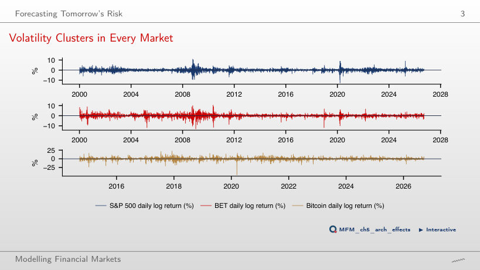
Answer
In 62% of the cases. The threshold is exceeded on 105 days (1.6% of the days); with independent days, the probability would be 8%. The share is 54% for BET and 32% for Bitcoin.
The Sign Is Nearly Unpredictable, the Size Is Not
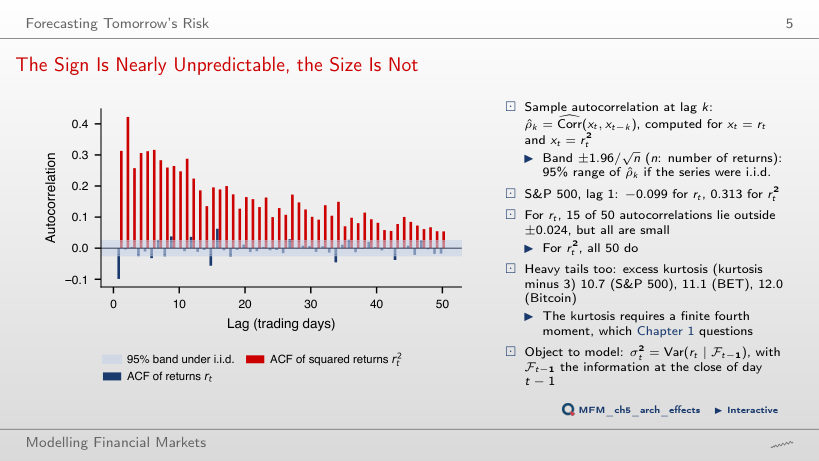
Answer
0.313. All 50 autocorrelations of r² lie outside the ±0.024 band; for r, 15 of 50 do, but all are small. The sign of tomorrow's return is nearly unpredictable, its size is not.
Variance Dynamics
Simulation: GARCH Produces Clustering
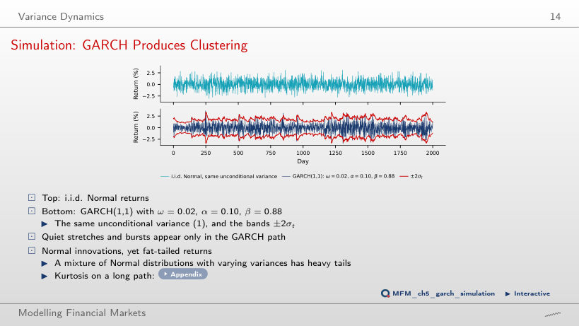
Answer
Yes. The theoretical excess kurtosis is 3.06, finite because (α + β)² + 2α² = 0.98 < 1. A mixture of Normal distributions with different variances has fat tails. On a path of one million days, the estimated excess kurtosis is 2.47; on the 2,000 days simulated on the page, only 0.40: kurtosis is estimated imprecisely on short samples.
Estimation and Uncertainty
Near-Unit Persistence: What the Delta Method Can and Cannot Do
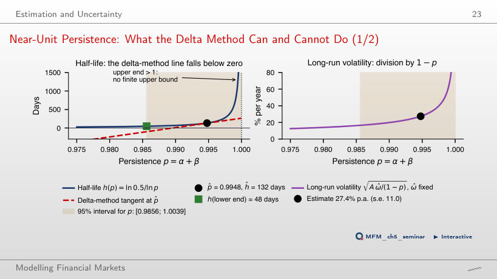
Answer
No. Its lower end would be −99 days: h(p) is strongly convex near p = 1, and the delta-method tangent falls below zero. Transforming the interval for p, [0.9856, 1.0039], gives h ∈ [48, ∞).
Forecasts and Results by Market
Volatility Term Structure
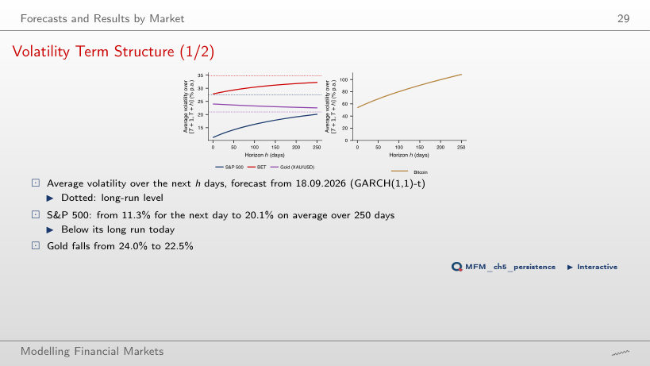
Answer
20.1%. The forecast rises towards the long-run level of 27.4%, because the current level is below it. For gold the current level is above the long-run one, and the curve falls from 24.0% to 22.5%. For Bitcoin α̂ + β̂ = 1, so the forecast grows without bound: 108.3% on average over 250 days.
Persistence: How Fast Do Shocks Fade?
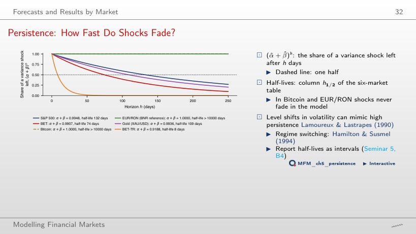
Answer
For the S&P 500, 59% is left (the half-life is 132 days); for BET-TR practically nothing (8 days). For Bitcoin and EUR/RON α̂ + β̂ = 1, so in the model the shocks never fade.
S&P 500: GARCH Volatility and the VIX
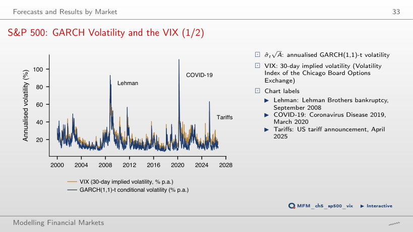
Answer
No. The variance risk premium compares VIX² with a 30-day variance forecast under the physical probability, while σ̂ is a one-day volatility, filtered with the parameters estimated on the full sample. The VIX exceeds the GARCH volatility on 84% of the days.
Asymmetry and Model Choice
The News Impact Curve for the S&P 500
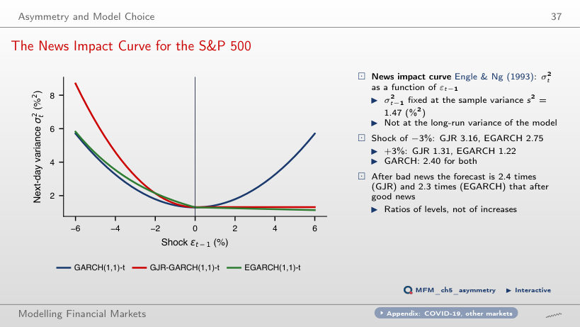
Answer
3.16 after −3% and 1.31 after +3%, with σ²(t−1) fixed at the sample variance 1.47: 2.4 times as much after bad news. EGARCH gives 2.75 and 1.22, and GARCH(1,1) gives 2.40 for both shocks.
Innovations and Diagnostics
S&P 500: Are the Innovations Normal?
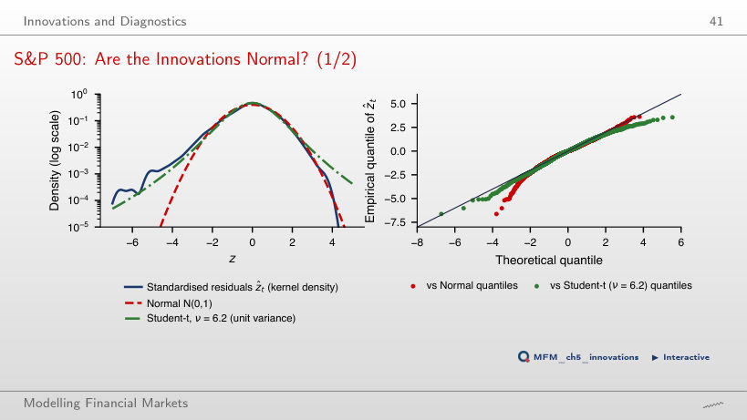
Answer
16, against 0.21 expected under the Normal distribution and 8.6 under a Student-t with ν = 6.2. The excess kurtosis falls from 10.7 (returns) to 1.73 (residuals), but normality is clearly rejected: Jarque–Bera 1,156.
Forecasting and Forecast Evaluation
Out-of-Sample Design and Forecast Paths, 2016–2026
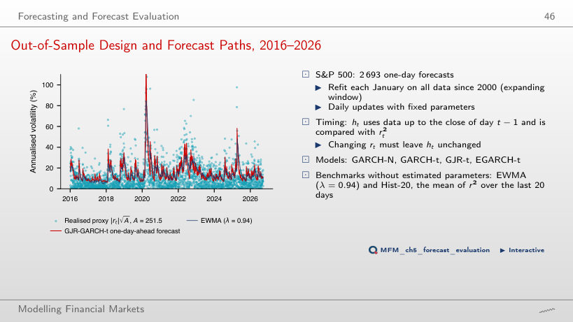
Answer
The mean QLIKE is 0.814 for EWMA and 0.731 for GJR-t, the lowest of the six forecasts; the DM t of EWMA against GARCH-t is 3.47. The choice of λ does not close the gap: the lowest EWMA QLIKE, 0.812, is reached at λ = 0.93.
S&P 500: Does Anything Beat GARCH(1,1)?
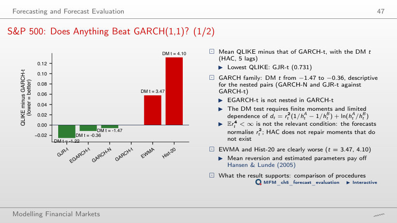
Answer
No. The mean QLIKE difference is −0.025, with DM t = −1.22; for these nested pairs the statistic is read descriptively. EWMA (t = 3.47) and Hist-20 (t = 4.10) are clearly worse. With MSE the ranking changes: EGARCH-t has the lowest value, 21.30.
Extensions and Limits
Long Memory: the Shape of the ACF of |r|
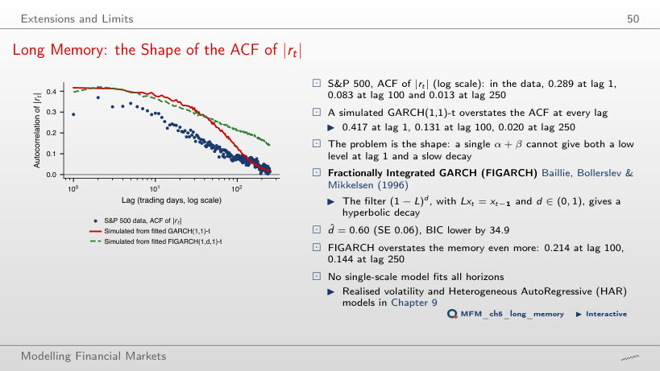
Answer
No. The data have 0.289 at lag 1, 0.083 at lag 100 and 0.013 at lag 250; the simulated GARCH(1,1)-t gives 0.417, 0.131 and 0.020, and FIGARCH 0.396, 0.214 and 0.144. With the data level at lag 1, the best geometric rate (least squares over 250 lags) is p = 0.9875: the curve falls too fast at first, staying below the data at lag 10 (0.258 against 0.295), and too slowly afterwards, above the data at lag 50 (0.156 against 0.132).
Case Studies: Quasi Score-Driven Volatility and Volatility Cycles
Case Study: Replication on 11 Stocks (cf. Paper, Fig. 2)
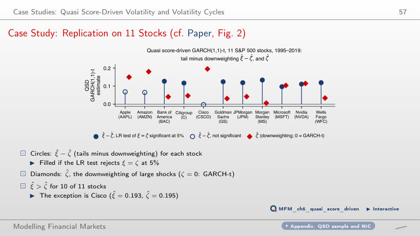
Answer
For 10 of 11; the exception is Cisco (ξ̂ = 0.193, ζ̂ = 0.195). The LR test rejects ξ = ζ at 5% for 8 stocks and ζ = 0 (the GARCH-t update) for 9.
S&P 500: The Slow Volatility Component and Forecasts Months Ahead
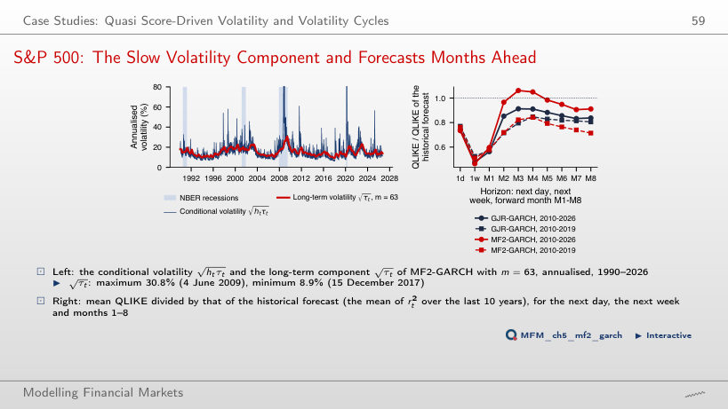
Answer
No. Over 2010–2019, the QLIKE relative to the historical forecast is 0.714 for MF2-GARCH and 0.806 for GJR-GARCH (DM t −2.66). Over 2010–2026 the ranking reverses: 0.911 against 0.838 (DM t 0.99). For month 1, the two models are practically equal over 2010–2019 (0.578 and 0.576).
Daily log returns in %, closes up to 18 September 2026: S&P 500, BET, BET-TR, Bitcoin, gold (XAU/USD) and the VIX, EODHD prices; EUR/RON: the BNR reference rate. Case studies: 11 S&P 500 stocks, 1995–2019, and the S&P 500, 1990–2026, EODHD prices.